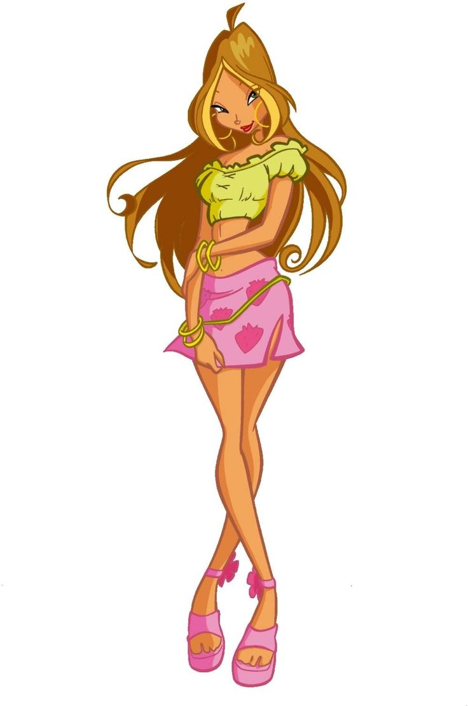
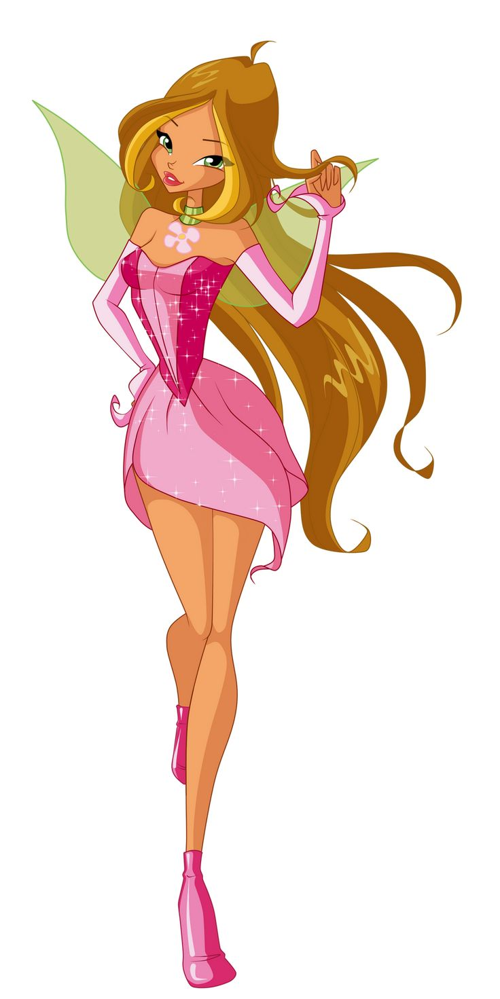
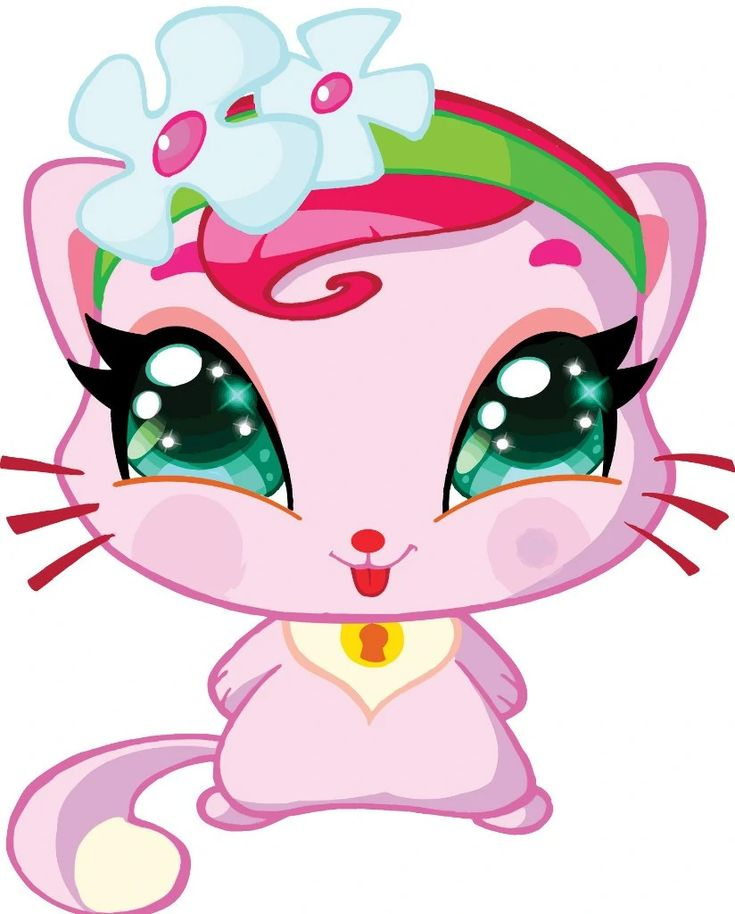

|
 |
 |
Flora é uma das protagonistas de O Clube das Winx e a Fada da Natureza. Ela é conhecida por sua personalidade gentil, tranquila, carinhosa e sensível. Seus poderes estão relacionados às plantas, flores e à natureza, permitindo que ela utilize a energia natural em suas aventuras mágicas.
Flora nasceu no planeta Lynphea, um mundo conhecido por sua ligação com a natureza. Ela possui uma irmã mais nova chamada Miele, que também tem uma conexão especial com as plantas e o mundo natural.
Flora estudava na Escola de Fadas de Alfea quando conheceu Bloom, Stella, Musa e Tecna. Com elas, formou o grupo que ficaria conhecido como Clube das Winx.
Ao longo de suas aventuras, Flora demonstra grande carinho por todos os seres vivos. Ela frequentemente utiliza seus conhecimentos sobre plantas para ajudar suas amigas, resolver problemas e enfrentar inimigos.
Apesar de ser uma fada pacífica, Flora também sabe ser corajosa quando alguém está em perigo. Sua ligação com a natureza se torna uma importante fonte de força durante as missões das Winx.
Na sua primeira transformação, conhecida como Magic Winx, Flora manifesta os poderes da Natureza, utilizando energia natural para controlar plantas, flores e raízes.
Seus poderes permitem que ela faça plantas crescerem, utilize cipós para prender adversários e crie ataques ou defesas com elementos naturais.
• Controle das plantas: Flora consegue manipular plantas, flores e raízes por meio de sua magia.
• Cipós mágicos: pode criar ou controlar cipós para prender inimigos e ajudá-la em diferentes situações.
• Crescimento acelerado: consegue estimular o crescimento de plantas utilizando energia mágica.
• Feitiços florais: utiliza flores e elementos da natureza em seus ataques mágicos.
• Proteção natural: pode criar barreiras e defesas utilizando plantas.
• Voo mágico: como fada, Flora pode voar utilizando suas asas mágicas.
Na transformação inicial, Flora apresenta cabelos longos castanhos, asas delicadas em tons de rosa e uma roupa característica composta por um top e uma saia curta em tons rosados, além de botas. Seu visual combina com sua personalidade delicada e com sua ligação com flores e plantas.
Essa forma representa o início de sua jornada como fada e o desenvolvimento de sua conexão com a natureza.

Coco é a gatinha de estimação de Flora. Ela é uma companheira querida da fada e aparece em momentos relacionados à vida das Winx e seus animais de estimação.
Coco representa o carinho de Flora pelos animais e combina com sua personalidade gentil e cuidadosa.
Coco é o animal de estimação de Flora e não deve ser confundida com os Fairy Animals, os animais mágicos associados às Winx em aventuras posteriores.
• Flora é a Fada da Natureza.
• Ela nasceu no planeta Lynphea.
• Sua irmã mais nova é Miele.
• Seus poderes estão relacionados às plantas, flores e raízes.
• É conhecida por sua personalidade gentil e carinhosa.
• Seu animal de estimação é a gatinha Coco.
• É uma das integrantes fundadoras do Clube das Winx.